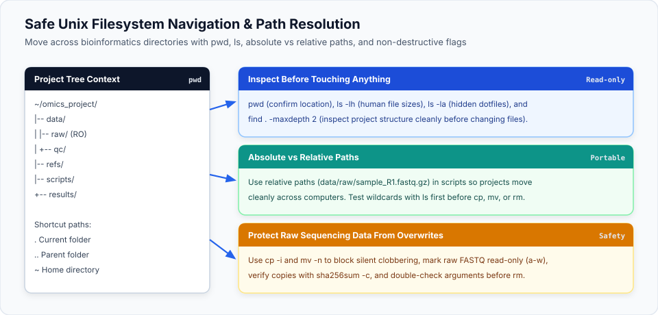

Command-Line Navigation for Bioinformatics
Nasir Mahmood Abbasi, PhD
Bioinformatics Educator
On remote servers and high-performance clusters (HPC), you rarely have a graphical file browser. In this lab, you will build a reproducible bioinformatics folder tree, move across directories with relative and absolute paths, verify compressed sequence files, and protect raw data from accidental overwrites.
Format: Hands-on lab (about 20 minutes). Open a terminal and practice navigating, inspecting, and safely moving files inside a disposable ~/projects/basic-nav directory. Every file is created locally on the spot, so no external sequencing downloads are required.
Overview, prerequisites, and learning objectives
Prerequisites: A Bash or Zsh terminal on Linux, macOS, or Windows Subsystem for Linux (WSL). No prior shell experience is needed, and every command runs inside a disposable practice folder.
By the end of this lab, you will be able to:
- Check your current working directory (
pwd) and interpret detailed directory listings (ls -la,ls -lh). - Move cleanly between folders using absolute paths (
/), relative paths (../), home shortcuts (~), and previous-directory toggles (cd -). - Inspect files safely with
file,gzip -dc,head, andlesswithout mistaking empty placeholders for real FASTQ data. - Copy, move, rename, write-protect (
chmod a-w), and checksum-verify files while avoiding common shell traps.

pwd, relative (../) vs absolute (/) paths, and safe flags (cp -i, mv -n, dry runs) prevents accidental overwrites of raw sequencing data.Why bioinformatics relies on the terminal
A single RNA-seq or variant-calling project often produces hundreds of FASTQ, BAM, log, and summary files stored on headless remote servers (machines with no graphical desktop). Terminal commands let you inspect dozens of samples in seconds and avoid silent mistakes when:
- Transferring large sequencing runs between your laptop and an HPC cluster with
scporrsync. - Passing exact input and output directory paths into containerized tools such as Docker or Apptainer (formerly Singularity).
- Checking log files from overnight alignment or variant-calling jobs to see why a run succeeded or stalled.
Step-by-step lab
Run these commands in order in a Bourne-like shell (bash or zsh, the default login shell on modern macOS). Commands work on Linux, WSL, and macOS unless a platform difference is noted.
1. Start in your home directory and build a project tree
Why: Keeping raw inputs, scripts, logs, and results in separate folders keeps scripts reproducible and stops intermediate files from mixing with original sequencing reads.
In Bash and Zsh, the tilde (~) expands to your personal home directory, and curly braces perform brace expansion, generating multiple folder paths from one command. Strict POSIX /bin/sh (such as dash on Debian/Ubuntu) treats braces as literal characters, so stick to bash or zsh here.
# Move to your home directory so every relative path starts from a known place
cd ~
# Create the project root and four standard subdirectories (-p creates parents as needed)
mkdir -p projects/basic-nav/{data,results,scripts,logs}
# Create three empty (0-byte) placeholder files for navigation practice
touch projects/basic-nav/data/sample_R1.fastq.gz
touch projects/basic-nav/data/sample_R2.fastq.gz
touch projects/basic-nav/scripts/README.md
# Check: list the four subdirectories inside the new project folder
ls -l projects/basic-navExpected output (usernames, groups, and timestamps match your own machine):
total 16
drwxrwxr-x 2 user user 4096 Nov 26 20:59 data
drwxrwxr-x 2 user user 4096 Nov 26 20:59 logs
drwxrwxr-x 2 user user 4096 Nov 26 20:59 results
drwxrwxr-x 2 user user 4096 Nov 26 20:59 scriptsThe leading d in drwxrwxr-x marks each entry as a directory. Notice that touch only creates empty 0-byte files: naming a file .fastq.gz does not compress it or put sequence reads inside it.
2. Confirm your location and read detailed listings
Why: Before moving, copying, or deleting files, always verify your working directory (the folder your shell is currently inside) and check whether a file is empty or hidden.
# Print the full absolute path of your current working directory
pwd
# Include hidden dotfiles (-a) and permissions/sizes (-l) in the project root
ls -la projects/basic-nav
# List the practice files inside data/ with human-readable sizes (-h)
ls -lh projects/basic-nav/dataExpected output:
/home/user
total 24
drwxrwxr-x 6 user user 4096 Nov 26 20:59 .
drwxrwxr-x 3 user user 4096 Nov 26 20:59 ..
drwxrwxr-x 2 user user 4096 Nov 26 20:59 data
drwxrwxr-x 2 user user 4096 Nov 26 20:59 logs
drwxrwxr-x 2 user user 4096 Nov 26 20:59 results
drwxrwxr-x 2 user user 4096 Nov 26 20:59 scripts
total 0
-rw-rw-r-- 1 user user 0 Nov 26 20:59 sample_R1.fastq.gz
-rw-rw-r-- 1 user user 0 Nov 26 20:59 sample_R2.fastq.gzKey details to read in ls -la:
.represents the current directory itself, and..represents its parent directory (here~/projects).ls -l projects/basic-navlists only the items directly insidebasic-nav; to inspect files insidedata, passprojects/basic-nav/data.- On macOS,
pwdprints/Users/yournameinstead of/home/yourname.
3. Move between folders with absolute and relative paths
Why: Hardcoding absolute paths (such as /home/alice/projects/basic-nav/data) breaks scripts when a collaborator or cluster node uses a different home path. Relative paths keep workflows portable.
- Absolute path: Starts with
/(filesystem root) and works regardless of your current directory. - Relative path: Starts from your current working directory (
pwd), using folder names,.(here), or..(one level up). - Previous-directory toggle:
cd -jumps back to the directory you were in immediately before your lastcd.
# Move into the project and then into data/ using relative paths
cd projects/basic-nav
cd data
pwd
# Step up one directory (back to basic-nav) and then toggle back to data/
cd ..
pwd
cd -
pwd
# Return to your home directory before Step 4
cd ~
pwdExpected output:
/home/user/projects/basic-nav/data
/home/user/projects/basic-nav
/home/user/projects/basic-nav/data
/home/user/projects/basic-nav/data
/home/userNotice that cd - prints the destination path as it switches back, and cd ~ returns you to /home/user (or /Users/user on macOS) so the relative paths in the next step work directly.
4. Inspect files without modifying them
Why: Never guess a file's format from its extension, and never open a multi-gigabyte FASTQ in a text editor (which tries to load the whole file into memory). Use read-only streaming commands instead.
In the commands below, standard output (stdout) is the stream of text a command prints to your terminal, and the pipe symbol (|) passes that stream directly into the next command without writing temporary files.
# 1. Check what the empty placeholder actually is
file projects/basic-nav/data/sample_R1.fastq.gz
gzip -dc projects/basic-nav/data/sample_R1.fastq.gz
# 2. Build one tiny valid gzipped FASTQ record locally so you can inspect real compressed text
printf '@demo_read_1\nATGCGTAC\n+\nIIIIIIII\n' | gzip -c > projects/basic-nav/data/demo_read_1.fastq.gz
# 3. Verify file type, size, and the first 4 lines without unpacking to disk
file projects/basic-nav/data/demo_read_1.fastq.gz
ls -lh projects/basic-nav/data/demo_read_1.fastq.gz
gzip -dc projects/basic-nav/data/demo_read_1.fastq.gz | head -n 4
# 4. Page through a plain-text file safely (press q to quit less)
less projects/basic-nav/scripts/README.mdExpected output (the second command intentionally fails on the empty placeholder):
projects/basic-nav/data/sample_R1.fastq.gz: empty
gzip: projects/basic-nav/data/sample_R1.fastq.gz: unexpected end of file
projects/basic-nav/data/demo_read_1.fastq.gz: gzip compressed data, from Unix, original size modulo 2^32 33
-rw-rw-r-- 1 user user 47 Nov 26 20:59 projects/basic-nav/data/demo_read_1.fastq.gz
@demo_read_1
ATGCGTAC
+
IIIIIIIIEach valid FASTQ record has four lines: a @ header, the DNA sequence, a + separator, and one Phred quality character per base. On Linux, zcat is shorthand for gzip -dc, whereas macOS zcat expects legacy .Z archives and fails on .gz files. Using gzip -dc (or gzcat on macOS) works reliably without modifying the compressed file on disk. Because README.md is still empty (0 bytes), less opens to a blank screen showing (END) until you press q; on larger files, press Space to page forward, /word to search, and q to quit.
5. Copy, move, rename, and write-protect raw files
Why: By default, cp and mv overwrite an existing destination file with no warning and no recycle bin. Always protect original sequencing files before organizing folders.
# Copy sample_R1 into results/ (original stays in data/)
cp -i projects/basic-nav/data/sample_R1.fastq.gz projects/basic-nav/results/
# Rename README.md in place to mark it as a template
mv -i projects/basic-nav/scripts/README.md projects/basic-nav/scripts/README.template.md
# Move all three FASTQ files from data/ into a dedicated data/raw/ subfolder
mkdir -p projects/basic-nav/data/raw
mv -i projects/basic-nav/data/sample_R1.fastq.gz projects/basic-nav/data/raw/
mv -i projects/basic-nav/data/sample_R2.fastq.gz projects/basic-nav/data/raw/
mv -i projects/basic-nav/data/demo_read_1.fastq.gz projects/basic-nav/data/raw/
# Lock raw FASTQ files as read-only for all users (a-w removes write permission)
chmod a-w projects/basic-nav/data/raw/*.fastq.gz
ls -l projects/basic-nav/data/rawExpected output:
total 4
-r--r--r-- 1 user user 47 Nov 26 20:59 demo_read_1.fastq.gz
-r--r--r-- 1 user user 0 Nov 26 20:59 sample_R1.fastq.gz
-r--r--r-- 1 user user 0 Nov 26 20:59 sample_R2.fastq.gzNotice the permissions changed from -rw-rw-r-- to -r--r--r--: the w (write) bit is gone, so an accidental redirect like > demo_read_1.fastq.gz is blocked with Permission denied.
Choosing overwrite-protection flags:
cp -iandmv -i(interactive): promptoverwrite ...?before replacing an existing file. Portable across Linux and macOS, and best for manual terminal work.cp -nandmv -n(no-clobber): skip existing files silently on macOS and older Linux, but deprecated in GNU Coreutils 9.2+ (where versions 9.2-9.4 exit with status1and printnot replacing). On modern Linux scripts, prefer GNU's--update=noneor check[[ ! -e "$dest" ]].chmod a-w: locks raw FASTQ files at the filesystem level so neither you nor a buggy script can overwrite them.
6. Follow safe naming rules, preview wildcards, and avoid shell traps
Why: Wildcards (globs) let you target dozens of samples in one command, but one typo or space in a filename can split arguments or delete the wrong files.
- Keep filenames script-safe: Use only ASCII letters, digits, underscores (
_), hyphens (-), and dots (.). Avoid spaces, parentheses, and slashes: an unquotedPatient 1 (Tumour)_R1.fastq.gzbreaks into three separate shell arguments. - Sort cleanly by name: Zero-pad sample IDs (
P01,P02, ...,P10) and use ISO dates (2026-11-18) so alphabetical order matches numeric and chronological order. Keep a sample sheet mapping original core-facility filenames and checksums before renaming copies. - Preview wildcards first: In Bash and Zsh,
*matches zero or more characters and?matches any single character. Always preview withlsorechobefore runningcp,mv, orrm.
# Preview only Read 1 files, then preview single-character matches
ls -lh projects/basic-nav/data/raw/*_R1.fastq.gz
echo projects/basic-nav/data/raw/sample_R?.fastq.gzExpected output:
-r--r--r-- 1 user user 0 Nov 26 20:59 projects/basic-nav/data/raw/sample_R1.fastq.gz
projects/basic-nav/data/raw/sample_R1.fastq.gz projects/basic-nav/data/raw/sample_R2.fastq.gzFour shell traps that destroy bioinformatics data:
>instead of>>: Single>truncates an existing output file to 0 bytes before the command even runs;>>appends to the end.- Space inside a wildcard: Typing
rm * .tmpinstead ofrm *.tmpdeletes every file in the current folder first and only then complains that.tmpdoes not exist. - Case sensitivity differences: Default macOS APFS is case-insensitive, so writing
tp53.tsvoverwritesTP53.tsv; Linux ext4 and XFS treat them as two separate files. - Recursive copy into self: Running
cp -r dir dir/subcreates an invalid self-nested target. GNUcpaborts withcp: cannot copy a directory, 'dir', into itself, and macOS BSDcpdiffers between-r(follows symlinks) and-Ras well as trailing slashes (dir/). Usersyncwith--excludeor copy to a sibling directory instead.
Verify your workspace and file checksums
After organizing files, verify two things: that every file landed in the right folder, and that transferred archives match their original byte-for-byte fingerprint (checksum).
# Inspect the whole project directory tree down to depth 3
find projects/basic-nav -maxdepth 3 | sortExpected output:
projects/basic-nav
projects/basic-nav/data
projects/basic-nav/data/raw
projects/basic-nav/data/raw/demo_read_1.fastq.gz
projects/basic-nav/data/raw/sample_R1.fastq.gz
projects/basic-nav/data/raw/sample_R2.fastq.gz
projects/basic-nav/logs
projects/basic-nav/results
projects/basic-nav/results/sample_R1.fastq.gz
projects/basic-nav/scripts
projects/basic-nav/scripts/README.template.mdA quiet exit from cp, mv, or scp only confirms that the local write finished; it cannot detect a truncated download from a sequencing core. Always generate and verify a SHA-256 checksum inside the folder containing the file (on macOS, replace sha256sum with shasum -a 256):
# Compute and verify a SHA-256 checksum on Linux (macOS: use shasum -a 256)
(cd projects/basic-nav/data/raw && sha256sum demo_read_1.fastq.gz > demo_read_1.sha256 && sha256sum -c demo_read_1.sha256)Expected output:
demo_read_1.fastq.gz: OKCommon errors and how to fix them
Error: "No such file or directory" from cd, cp, or mv
- Cause: A typo in the path, running a relative path from the wrong
pwd, a missing parent directory, or an unquoted space in a filename. - Fix: Run
pwdandls -laon the parent directory to check exact spelling and capitalization, use theTabkey for autocomplete, and add-pwhen creating nested folders withmkdir.
Symptom: Files appear missing or overwritten after mv
- Cause: Moving a file into a different directory than intended, or forgetting
-iwhen a file with the same name already existed at the destination. - Fix: Run
cd -andls -lato check your previous folder, or search by name from the project root withfind ~/projects/basic-nav -name "*sample*". Because Unixmvhas no undo, keep backups and use-ibefore moving files.
Symptom: Zero-byte file or "unexpected end of file" from gzip
- Cause: An interrupted download, a
touchplaceholder, or accidental truncation with>. - Fix: Check size and type with
ls -lhandfile. Re-transfer the archive from the source and confirm integrity withsha256sum -c(Linux) orshasum -a 256 -c(macOS) before deleting the original.
Error: "Permission denied" when reading, writing, or moving files
- Cause: Either the file was intentionally write-protected with
chmod a-w, or it belongs to another user or group without read/write access. - Fix: Check the permission string and owner with
ls -l. If you locked your own file withchmod a-wand genuinely need to edit it, restore owner write access withchmod u+w filename. On shared HPC systems, ask your administrator for group permissions; never runchmod 777on research directories.
Practice exercise
Without leaving your home directory (cd ~), test what you learned in ~/projects/basic-nav:
- Use
findto locateREADME.template.mdinsideprojects/basic-nav. - Preview all
.fastq.gzfiles inprojects/basic-nav/data/rawusingecho, then copydemo_read_1.fastq.gzintoprojects/basic-nav/results/with interactive protection (cp -i). - Confirm that
projects/basic-nav/results/demo_read_1.fastq.gzdecompresses to 4 lines usinggzip -dcandhead.
Check solution
cd ~
find projects/basic-nav -name "README.template.md"
echo projects/basic-nav/data/raw/*.fastq.gz
cp -i projects/basic-nav/data/raw/demo_read_1.fastq.gz projects/basic-nav/results/
gzip -dc projects/basic-nav/results/demo_read_1.fastq.gz | head -n 4Because cp initializes a new destination file using the source file's permission bits masked by umask, results/demo_read_1.fastq.gz remains read-only (-r--r--r-- under typical umasks) even without -p; run chmod u+w on the copy if you ever need to edit it. Finally, gzip -dc ... | head -n 4 prints the four-line @demo_read_1 FASTQ record.
Platform notes and safe habits
- Built-ins vs external utilities:
cdandpwdare built into the shell, whilels,cp,mv,find, andsha256sumare standalone programs that differ slightly between GNU/Linux and BSD/macOS. Checkman lsorman cpon your machine before relying on platform-specific flags such as GNU--backup=numbered. - Safe cleanup: Before deleting practice or temporary folders, check the target path with
lsfirst. Many researchers move unwanted files into a temporarytrash/folder and inspect it before runningrm -rf. When finished with this lab, you can remove only the practice tree withls -ld ~/projects/basic-navfollowed byrm -rf ~/projects/basic-nav(if it contains write-protected files,chmod -R u+w ~/projects/basic-navfirst or userm -rfafter checking the path). - Sensitive data: Follow your institution's data governance rules for clinical or controlled-access sequencing files, and never copy restricted data to personal laptops or unsecured servers.
Recap and next steps
You now have a working command-line routine: check pwd, inspect with ls -lh and file, navigate with relative paths, preview globs before modifying files, lock raw data with chmod a-w, and verify transfers with SHA-256 checksums.
- Need a refresher on bits, bytes, encodings, and filesystems? Review Computer and Data Fundamentals for Biologists.
- Ready to filter FASTA, FASTQ, and TSV files with
grep,awk,cut, andseqkit? Continue to Command-Line Text Processing for Bioinformatics. - Setting up reproducible bioinformatics software? See Micromamba Environments for Bioinformatics or Connecting to Remote HPC Clusters.
References
- GNU Bash Reference Manual: shell behavior, including brace expansion,
cd, andpwd - GNU Coreutils manual: official documentation for
ls,cp,mv,mkdir,chmod, andsha256sum - GNU Gzip manual:
gzip -dcandzcatdecompression behavior - The Linux man-pages project: canonical manual pages for Linux utilities
- Software Carpentry: The Unix Shell lesson
Software and package behaviour can change. Please re-check commands against the official documentation. If a command does not work, you find an error, or the tutorial is no longer reproducible, please report it through the Contact page.
Author: Nasir Mahmood Abbasi, PhD - Category: Shell Command Basics